Selected Works
近期精選的設計專案與視覺實驗。
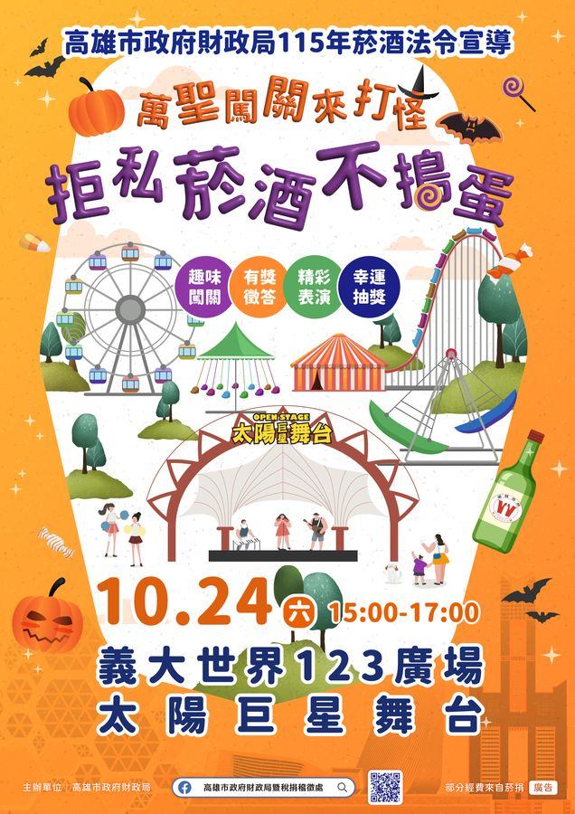
活動視覺設計
2026高雄市政府財政局菸酒法令宣導
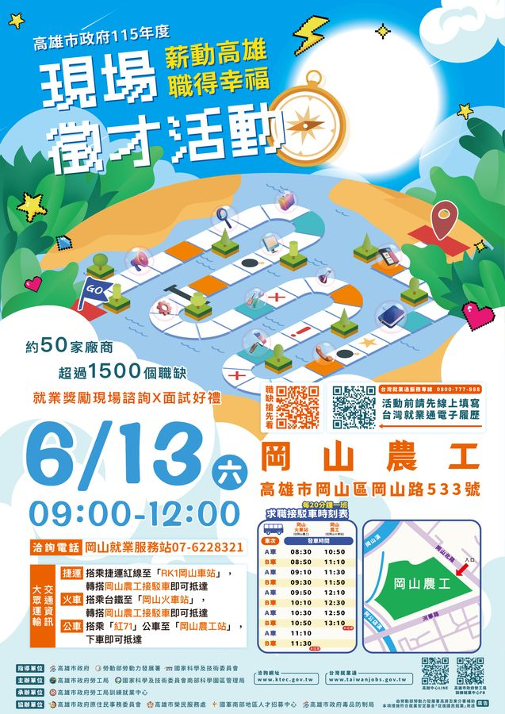
活動視覺設計
2026高雄市政府現場徵才活動 薪動高雄 職得幸福(岡山大型徵才)
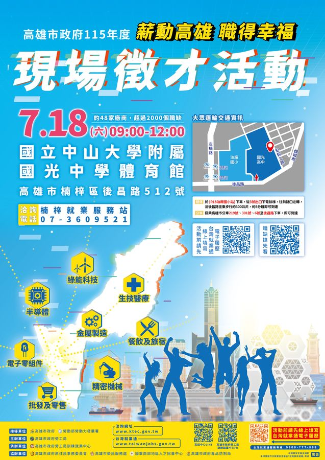
活動視覺設計
2026高雄市政府現場徵才活動 薪動高雄 職得幸福(楠梓大型徵才)
活動視覺設計
2026高雄市政府消防局後勁分隊與特搜第一分隊啟用典禮
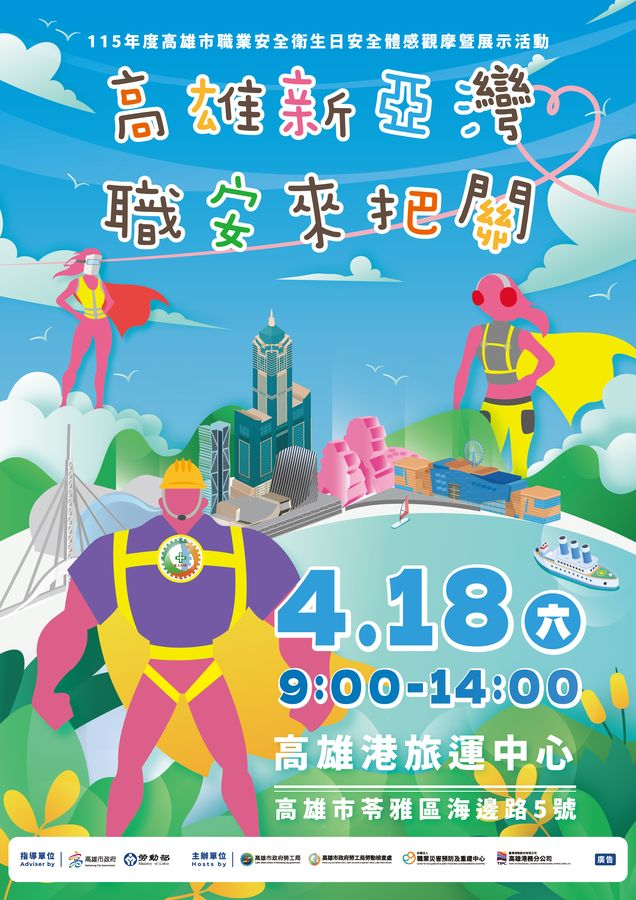
活動視覺設計
2026高雄市政府職業安全衛生日安全體感觀摩暨 展示活動
活動視覺設計
2026嘉義縣政府現場徵才活動 Part1
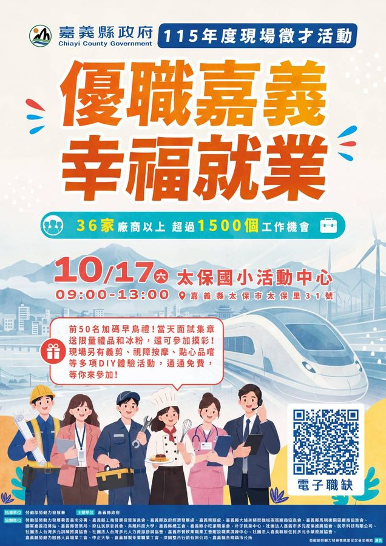
活動視覺設計
2026嘉義縣政府現場徵才活動 Part2
活動視覺設計
2026台南好生活 台南呷頭路大型就業博覽會 Part3
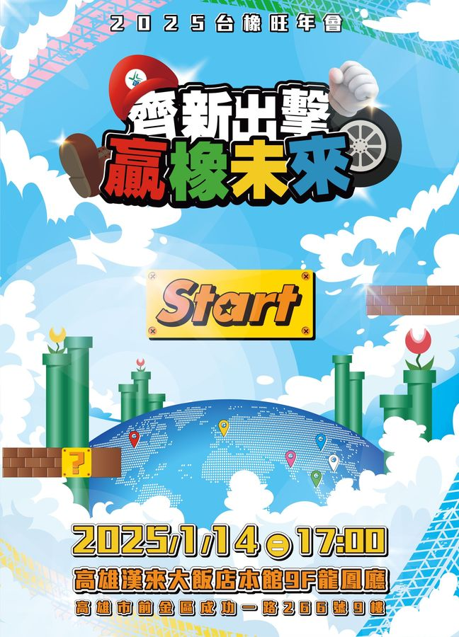
活動視覺設計
2025台橡旺年會
活動視覺設計
2025台南好生活 台南呷頭路大型就業博覽會 Part1
活動視覺設計
2025台南好生活 台南呷頭路中型就業博覽會 Part1
活動視覺設計
2024台南好生活 台南呷頭路大型就業博覽會 Part4
0:50
動態設計
2026台橡旺年會ELT進場前導動畫
0:35
動態設計
2026台南好生活 台南呷頭路大型就業博覽會 Part2啟動儀式動畫
0:30
動態設計
2025僑生就業博覽會啟動儀式動畫
1:30
動態設計
2025高雄市政府智慧港都 幸福永續論壇展示活動啟動儀式動畫
0:30
動態設計
2026高雄市政府職業安全衛生日安全體感觀摩暨 展示活動啟動儀式動畫
0:18
動態設計
2025台灣就業通雲嘉南區就業博覽會啟動儀式動畫
0:52
動態設計
2025台灣就業通雲嘉南區就業博覽會活動懶人包
0:49
動態設計
2026台灣就業通雲嘉南區就業博覽會啟動儀式動畫
0:57
動態設計
2026台灣就業通雲嘉南區就業博覽會活動懶人包
0:15
動態設計
2026台灣就業通雲嘉南區就業博覽會電視牆廣告
互動程式
程式設計
測測你是哪種馬路動物人格
互動程式
程式設計
測測你是哪種職場神獸
互動程式
程式設計
探索你的職場動物風格
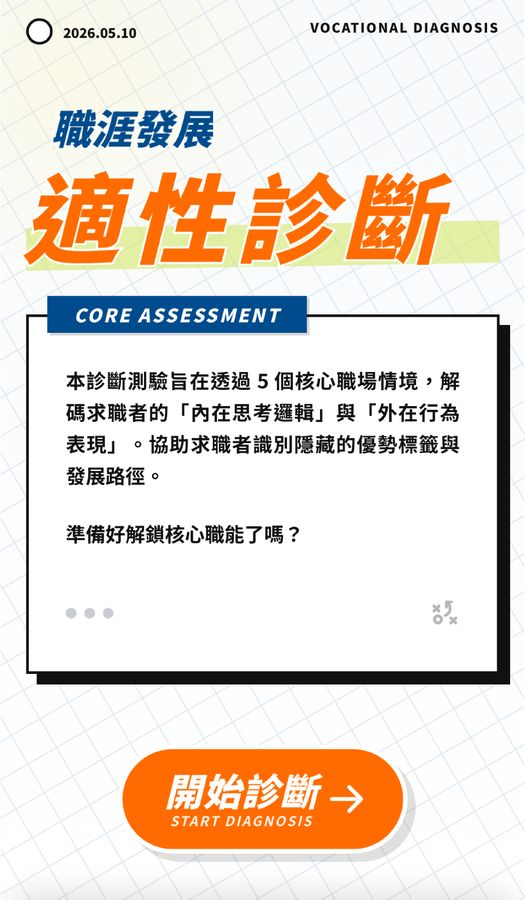
互動程式
程式設計
求職適性測驗
互動程式
程式設計
活動電子抽獎程式
互動程式
程式設計
互動展示塗鴉牆

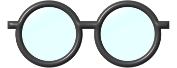
我的眼鏡呢？
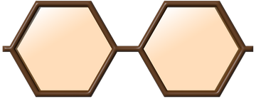
幫 MingFly 換個造型！
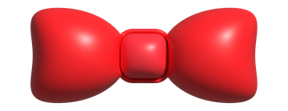
領子前面好像有點空！
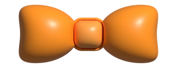
拖曳發揮你的創意！
About Me
你好，我是 MingFly。對我而言，設計不只是美感的體現，更是為了解決問題，把想說的故事好好傳達出去。
我平時的創作範圍很廣，從平面的活動主視覺、生動的動態影像，到具備互動與可玩性的網頁，我都很有興趣。我也非常喜歡透過 AI 協作工具來輔助創作，為每一個專案找出最適合的呈現方式。
過去，我負責過不少展示活動和公部門的視覺設計與啟動儀式動畫。除了平面和動態設計，我也嘗試網頁程式設計和前端開發，獨立完成「線上人格測驗」和「活動電子抽獎系統」這類的互動專案。從一開始的腦力激盪，到最後看著作品實際上線，把想像變成現實的過程，是我做設計最大的成就感！
Core Skills
Graphic Design
平面設計
Key Visual Design
主視覺設計與延伸
Motion Graphics
動態圖像設計
Front-End Development
前端網頁開發
Creative Coding
互動程式設計